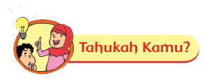
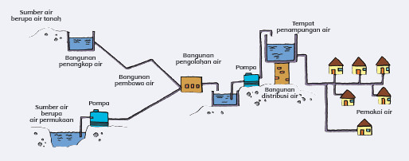
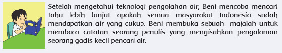
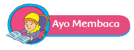
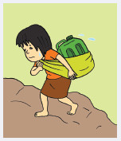

Air sangat dibutuhkan oleh kehidupan di bumi. Sumber air tersebut ada yang diperoleh dari air tanah, mata air, air sungai, danau, dan air laut. Sumber air di bumi tersebut berasal dari suatu siklus air. Panas matahari menguapkan air laut sehingga menjadi awan, dan kemudian menjadi hujan. Air hujan jatuh ke bumi, sebagian meresap ke dalam tanah menjadi air tanah dan mata air. Air tersebutlah yang biasa digunakan kita di rumah. Berikut adalah proses pengolahan air dari sumber mata air hingga sampai ke rumah. 
Dari cerita tadi, jawablah pertanyaan berikut dan diskusikan hasilnya dengan teman kamu.


Bacalah dalam hati teks berikut!
Dari Sudut Gunung Kidul Siang pukul 12.00 yang terik di sebuah desa di sudut Gunung Kidul. Langkah kaki terseok di atas jalanan berbatu cadas yang menanjak. Jerigen berkapasitas 20 liter di punggungnya seakan menenggelamkan tubuh gadis yang kecil itu. Wajah gadis manis itu basah oleh keringat yang bercucuran sepanjang jalan. Menyusuri jalanan berbatu cadas, melewati sawah, membiarkan dirinya terpanggang matahari, dan menjejakkan kaki pada tangga licin yang dapat menyebabkan terpeleset ke dalam ceruk bebatuan sempit dan tajam untuk satu jerigen air. Ia sudah melakoni pekerjaannya sejak berusia 10 tahun. Beban berat yang setiap hari digendongnya, rupanya menghambat pertumbuhan badannya. Ia tidak terlalu tinggi untuk gadis seusianya. Sepuluh menit kemudian ia memasuki sebuah rumah berdinding bambu bercampur kayu yang sudah koyak di sana-sini, kemudian menuangkan air di sebuah tempayan yang terbuat dari tanah. Begitulah hari demi hari ia lalui dalam hidupnya hingga kini.
Jawablah Pertanyaan berikut!
Lewat tulisannya, seorang penulis ingin menceritakan sebuah kisah perjuangan si gadis kecil pencari air. Tugas dari seorang penulis tidak hanya ingin menceritakan sebuah kisah atau cerita saja, namun tulisannya diharapkan dapat menyampaikan pesan atau hal–hal baik yang dapat dipelajari oleh pembacanya.